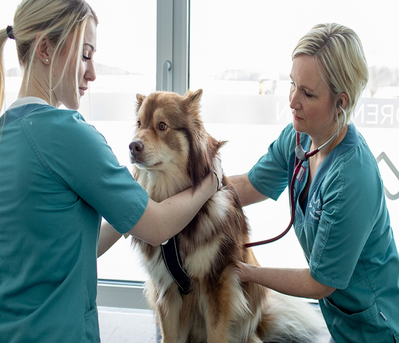
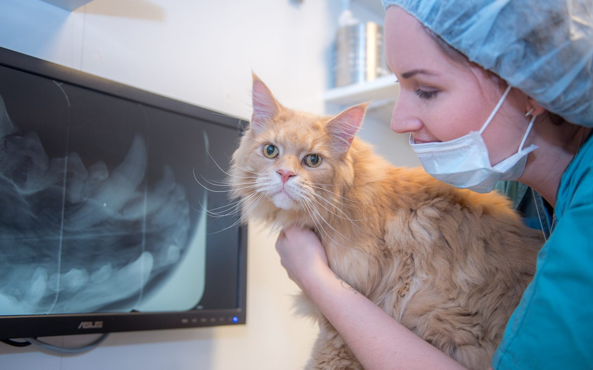
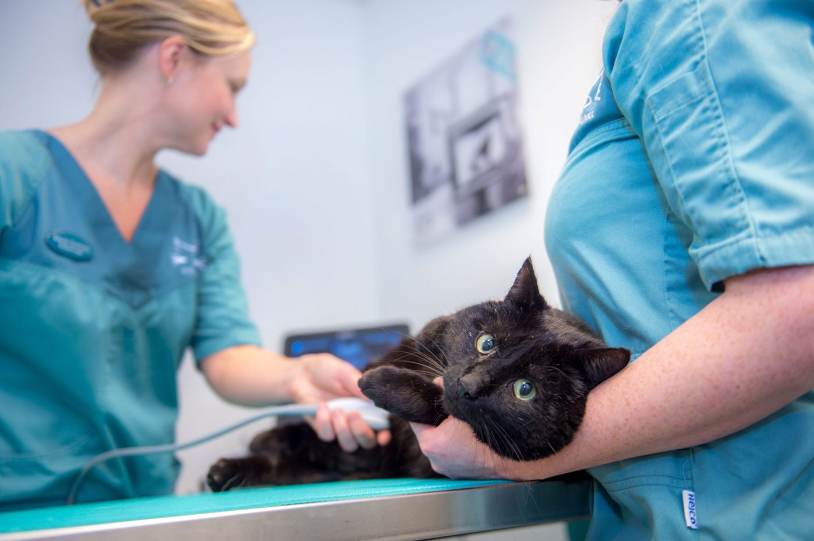
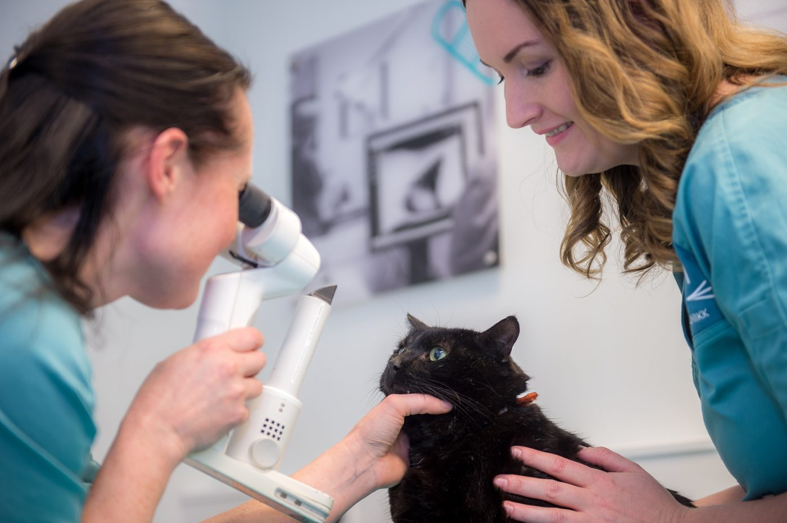
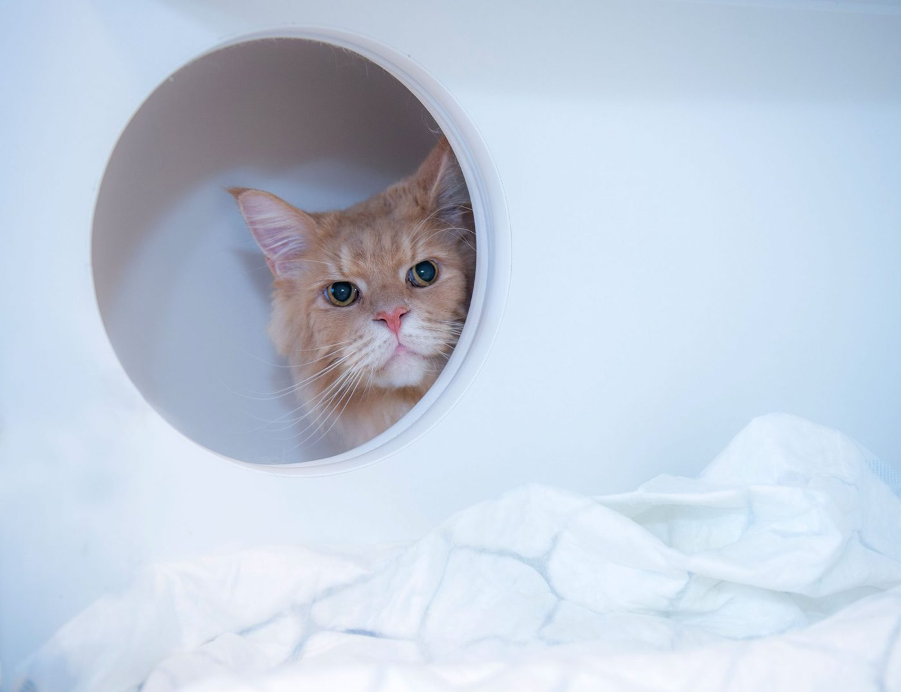
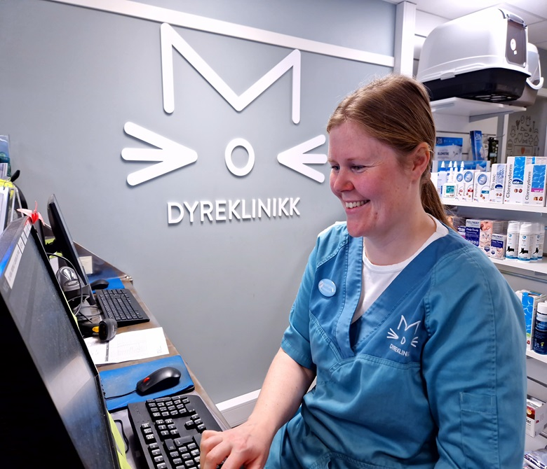
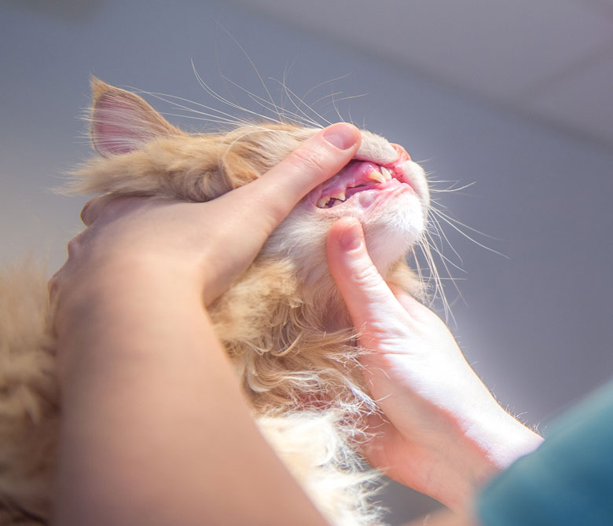
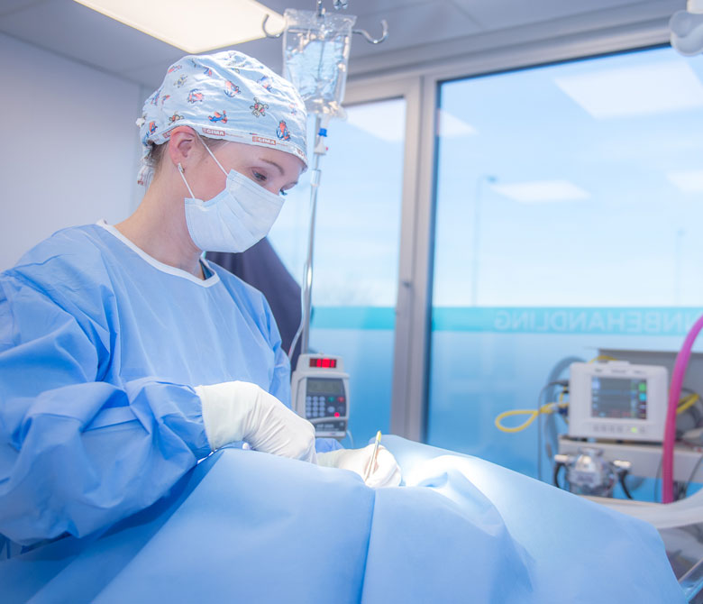
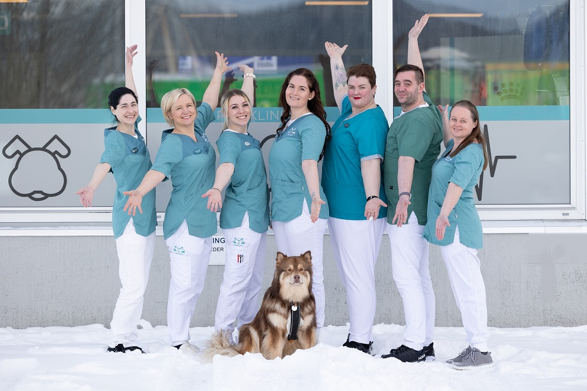
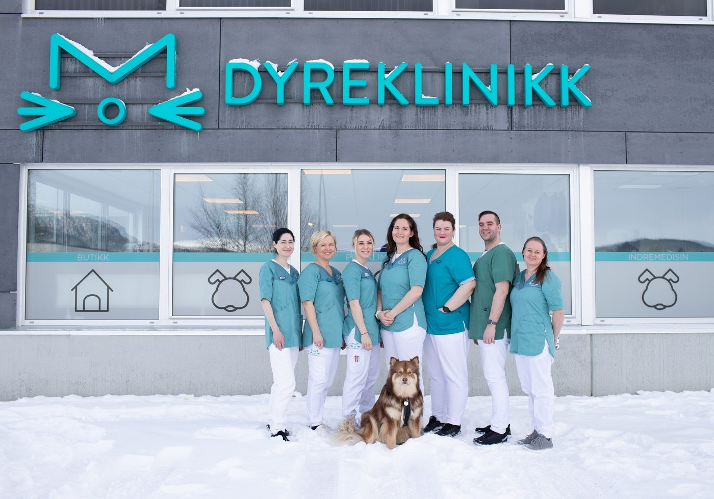

Hva du får rolige omgivelser og full oppmerksomhet til deg og ditt dyrEtter undersøkelsen får du et prisestimat — før vi går videre med behandling




Vi har holdt på med smådyr i Mo i Rana siden 2004, og er byens eneste rene smådyrklinikk.
Alle polikliniske timer er forhåndsbestilt. Det gir kort ventetid, rolige omgivelser og full oppmerksomhet til deg og dyret ditt.
De fleste blod-, urin- og celleprøver analyseres hos oss. Raskere svar betyr at behandlingen kan starte tidligere.
Digital røntgen, ultralyd med flere prober, eget tannrom med tannrøntgen, moderne operasjonsstue og vanntredemølle. Trenger dyret spesialist, henviser vi videre.
ISFM-sertifisert Cat Friendly Clinic på Gold Standard-nivå, adskilte venteområder for hund og katt, og et ISO 9001-basert kvalitetssystem godkjent av Den Norske Veterinærforening.
Hva som trengs av undersøkelser avhenger av dyrets tilstand. Etter undersøkelsen gir vi deg, så langt det er mulig, et prisestimat før videre behandling. Hele prislisten vår ligger åpent på nettsiden.
Be om timeTar 30 sekunderHaster det? Akutte pasienter tas imot fortløpende — ring 75 14 31 30, så vurderer en veterinær hastegraden samme dag.

Hund, katt, ilder, kanin og gnagere. Mer omfattende utredninger starter ofte med en vanlig time.
Vaksinasjoner, helseattester, ID-merking med chip, kloklipp, EU-pass, patella- og BOAS-attester godkjent av NKK, øye- og øreundersøkelse, prøvetaking.

Dårlig ånde, tannstein eller rødt tannkjøtt? Eget tannrom med digital tannrøntgen, ultralydrens og polering, tanntrekk og rotfylling der det er forsvarlig.

Kastrering og sterilisering, svulster, buk- og tarmkirurgi, patellaluksasjon og korsbånd. Gassanestesi, kontinuerlig overvåkning og tilpasset smertelindring før, under og etter.
Etter operasjon eller ved kroniske plager tilbyr fysioterapeuten vår rehabilitering med vanntredemølle, laser, manuell terapi og osteopati.
Fire veterinærer, tre autoriserte dyrepleiere, fysioterapeut og resepsjonist. Marte, som var med å starte klinikken i 2004, er fortsatt veterinær og daglig leder.

Ja, vi har timebestilling på alle polikliniske timer. Det er nettopp det som gir kort ventetid og ro rundt dyret ditt. Time bestilles via skjemaet her, på telefon 75 14 31 30, e-post eller online booking. Passutstedelse og behandling mot revens lille bendelorm gjør vi uten time.
Akutte pasienter tas imot fortløpende. Ring oss, så vurderer en veterinær alltid hastegrad og behov for behandling samme dag. Ved mistanke om smittsom sykdom ber vi deg ringe før du går inn i klinikken.
Prislisten for ordinære tjenester ligger åpent på nettsiden vår. Hva som trengs av undersøkelser avhenger av dyrets tilstand, så etter undersøkelsen gir vi deg, så langt det er mulig, et prisestimat før videre behandling. Betaling skjer samme dag med bankkort, kredittkort, Vipps eller kontant. Vi tilbyr ikke faktura, men kan formidle finansiering via Resurs Bank.
Vi er ISFM-sertifisert Cat Friendly Clinic på Gold Standard-nivå. Venterommet er stort og romslig med adskilte områder for hund og katt, og vi ber om at katter kommer i bur. Vi har også et skjermet «stille rom» når det trengs ekstra ro rundt eier og pasient.
Vi er en ren smådyrklinikk: hund, katt, ilder, kanin og gnagere. Kaniner oppstalles på eget rom uten kontakt med andre arter.
Mandag til fredag 09:00–16:00, stengt lørdag og søndag. Telefonen besvares mandag til fredag 08:45–16:00, med lunsjpause 12:00–12:30. Hver 10. kloklipp har vi tidligere tilbudt gratis — spør oss om klippekort når du er innom.
Moderne lokaler med tre undersøkelsesrom, eget tannrom, røntgenrom, operasjonsstue, laboratorium og fysioterapirom. Butikk og resepsjon i samme bygg.
